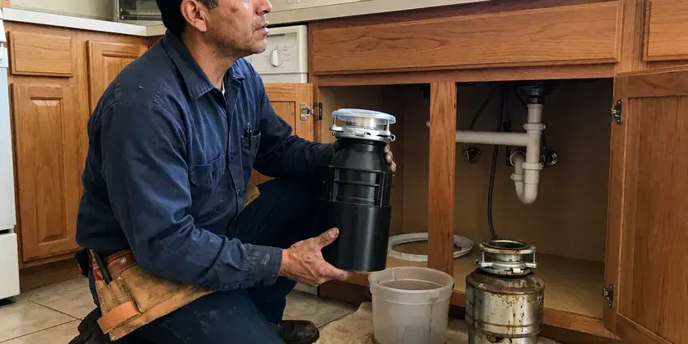
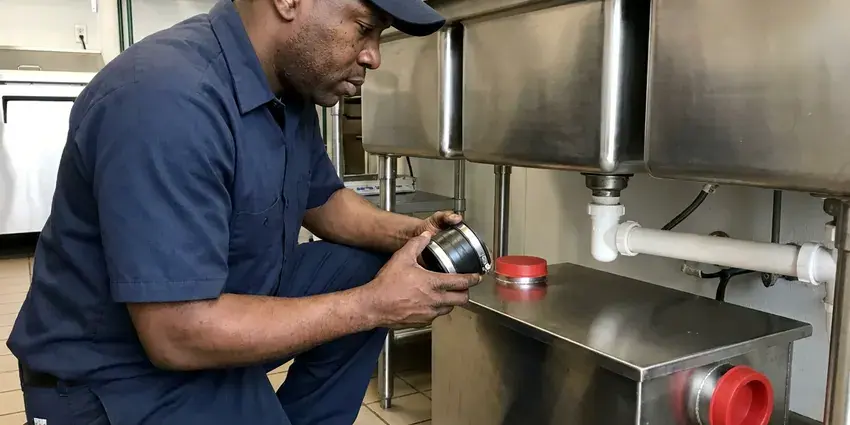
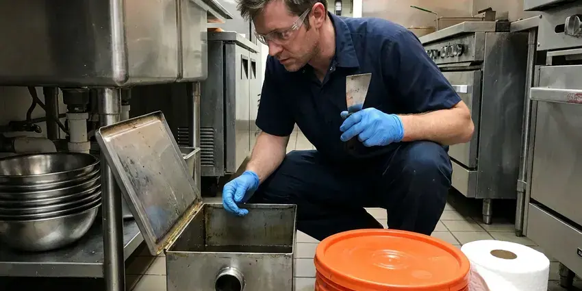
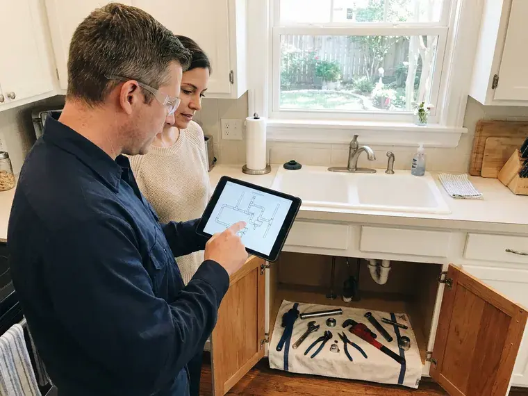

Garbage Disposal Installation in Waukee, IA
Adding a disposal to your kitchen? We install new garbage disposals across Waukee, IA with proper mounting, drains and wiring.
- Iowa Plumbing Experts
- All Major Brands Installed
- Licensed & Insured
- Upfront Pricing

Expert Garbage Disposal Installation Services in Waukee, IA.
Our team is ready to provide fast, dependable garbage disposal installation.
Professional Garbage Disposal Installation in Waukee, IA
When it comes to garbage disposal installation, KFR Plumbing provides dependable service across Waukee, IA. We focus on proper sizing and secure connections to prevent future issues and meet local plumbing codes.
Our expertise includes:
- Connect dishwasher drains with air gaps or high loops
- Install all major garbage disposal brands
- Experience with various power levels and capacities

Additional Kitchen Plumbing Services in Waukee, IA
Our kitchen plumbing services in Waukee, IA cover sinks, disposals, dishwashers, and grease traps so your kitchen stays clean, safe, and fully functional.



Garbage Disposal Replacement near Waukee

Waukee grease trap installation specialists

Grease Trap Cleaning near Waukee

Customers
Why Choose KFR Plumbing for Garbage Disposal Installation in Waukee, IA?
We also make sure the electrical side is safe and properly grounded. That protects your home and your new disposal.
- Clean Install, Drains and wiring are tidy and leave room under the sink.
- Code Compliance, All installations follow Iowa plumbing codes for safety and performance.
- Leak Prevention, We meticulously check all seals and connections to prevent future leaks and water damage.
Citywide Coverage
We pride ourselves on our wide service area, making sure that quality garbage disposal installation is accessible to all residents in Waukee. Our local plumbers are always nearby, ready for your call.
Experienced Team
Our team consists of highly trained and experienced plumbers who specialize in kitchen appliance installations, including garbage disposals. They understand the details of various models and kitchen setups.
Safety-First Approach
We follow Iowa plumbing code for trap and dishwasher drain connections and the manufacturer's electrical requirements. Power is always fully shut off before wiring.
Trusted Certified Waukee Plumbing Services Professionals
At KFR Plumbing, we take pride in providing licensed, certified plumbing services throughout Waukee, IA. Backed by leading industry credentials, our experienced plumbers combine technical skill with genuine customer care. Whether it is repair, installation, or maintenance, we follow strict safety and quality standards to deliver long-lasting results you can trust.
Call Us Now PHCC Plumbing Contractor Recognition
PHCC Plumbing Contractor Recognition Better Business Bureau (BBB) Accreditation
Better Business Bureau (BBB) Accreditation Angi Certified Pro
Angi Certified Pro ISO 9001 Quality Management Certification
ISO 9001 Quality Management CertificationDependable Garbage Disposal Installation Services in Waukee, IA
InSinkErator Garbage Disposal Installation in Waukee, IA
KFR Plumbing specializes in the installation of InSinkErator garbage disposals, a popular choice among homeowners in Waukee, IA for their reliability and range of models. Whether it's an Evolution series unit or a Badger model, our technicians are familiar with the specific installation requirements to deliver strong performance and longevity.

High-Horsepower Unit Installation in Waukee
If you're looking to install a robust 3/4 HP or 1 HP garbage disposal in Waukee for heavy-duty use, KFR Plumbing has you covered. These units require careful installation to handle tough food waste effectively. We ensure your existing plumbing can handle the increased capacity and that all connections are secure to prevent clogs and leaks.
Upgrading to Continuous Feed in Waukee, IA
If you currently have a batch-feed disposal or no disposal at all and wish to upgrade to a more convenient continuous-feed model in Waukee, IA, we can facilitate this. Our service includes any necessary modifications to your plumbing or electrical connections to ensure compatibility and proper function of your new, more user-friendly disposal system.
Batch Feed Disposal Installation in Waukee, IA
For homeowners in Waukee, IA who prefer batch-feed garbage disposals, which operate only when the stopper is inserted, we offer dedicated installation. These units are often favored for their safety features and can be more powerful. Our plumbers handle correct wiring and plumbing for these models, making sure the unit works securely and efficiently.
Air Switch Disposal Installation in Waukee, IA
Air switches let you start the disposal with a button on the sink or countertop. This avoids drilling for a new wall switch. We install the button and control box under the sink. Air switches are popular in kitchen remodels and islands.
High-Capacity Garbage Disposal Installation in Waukee, IA
If you're upgrading to a 1 horsepower or continuous-feed garbage disposal, KFR Plumbing has the expertise. These powerful units are great for active kitchens in Waukee, IA but require careful installation to handle heavier loads. We verify your electrical circuit can support the increased demand and make sure the discharge pipe is correctly sized to prevent clogs with larger food waste particles. We work with brands like InSinkErator Evolution and Waste King Legend.
Garbage Disposal Installation Cost Factors in Waukee, IA
Costs depend on the disposal model, whether a new outlet or switch is needed, and the drain layout. A simple install on a ready sink is the least expensive. Adding electrical or reworking drains adds time. We provide a clear quote that includes the unit and labor.

Disposal Installation in Rentals and Investment Properties in Waukee
Landlords often want dependable, affordable disposals that hold up to tenant use. We install durable models with strong warranties and simple maintenance needs. Our installs are quick to minimize turnover time. We can handle multiple units in a single visit.
Garbage Disposal Installation Near Me in Waukee, IA
We also understand local kitchen layouts and common drain setups. That helps us plan installs that drain well and fit cleanly. You get a disposal that works from day one.
We understand that a new garbage disposal can greatly improve your kitchen's function. That's why KFR Plumbing is committed to providing convenient and reliable installation services across the entire Waukee area, ensuring residents always have access to quality plumbing solutions without a long wait.
KFR Plumbing at a Glance
- Licensed and insured plumbers serving Waukee, IA
- 24/7 emergency service with same-day scheduling
- Upfront, flat-rate pricing before work begins
- 4.8-star rated by 620+ Iowa customers
Waukee Map
Waukee Information
- Population
- 31,645
- Area codes
- Local
- Service area
- Waukee and communities within 40 miles
- Nearby
- West Des Moines, Urbandale, Des Moines, Ankeny
Proper garbage disposal installation is important for homes in Waukee, IA. Water across much of Iowa comes from groundwater and runs hard to very hard, so scale buildup in water heaters and fixtures is common. A correctly mounted unit holds up better against mineral buildup and daily wear.
Expert Services
Trust our professionals for reliable KFR Plumbing solutions in Waukee, IA.
Our Specialized Plumbing Services in Waukee, IA
At KFR Plumbing, we provide a complete range of plumbing services across Waukee, IA. From leak detection to full system installations, our team ensures fast, precise, and affordable service for both residential and commercial properties. Explore our core services below:


How Our Garbage Disposal Installation Process Works in Waukee, IA
KFR Plumbing follows a clear, step-by-step process for every garbage disposal installation, ensuring quality results for our Waukee, IA customers.
Request a Quote
Start by calling (515) 308-3583 or filling out our online form to schedule your garbage disposal installation. We'll discuss your needs and provide an upfront, transparent quote.
Old Unit Removal
If replacing an existing unit, our technicians will carefully disconnect and remove your old garbage disposal. We ensure proper disposal of the old appliance.
New Unit Setup
We install your new garbage disposal, firmly mounting it to the sink flange and connecting it to your drain lines and electrical supply. This includes proper sealing and grounding.
Frequently Asked Questions About Garbage Disposal Installation in Waukee
The cost for garbage disposal installation in Waukee, IA typically ranges from $200 to $500, not including the unit itself. This price can vary based on the complexity of the installation, such as needing new wiring or plumbing adjustments, and the type of disposal. We provide honest, upfront pricing before any work begins.
If there is already an outlet or switch under the sink, usually not. If not, we coordinate with a licensed electrician.
To prolong the life of your new garbage disposal, avoid putting hard items like bones, fruit pits, or fibrous vegetables down the drain. Always use plenty of cold water while operating the disposal and run it regularly, even if there's no waste, to prevent rust and keep components moving.
A simple replacement usually does not. New electrical circuits or drain changes may require permits, and we will let you know.
KFR Plumbing stands behind our work with a solid warranty on all garbage disposal installations. We ensure that our workmanship is of the highest quality, giving you peace of mind. Specific warranty details will be provided at the time of service.
KFR Plumbing installs all major garbage disposal brands, including InSinkErator, Waste King, Moen, Whirlaway, and KitchenAid. Our plumbers are familiar with the specific installation requirements for each manufacturer and can help you pick the best unit for your needs.
If your sink area in Waukee lacks a dedicated electrical outlet for a garbage disposal, a licensed electrician can install one safely and to code. This is a common requirement for new installations in older homes and ensures your new unit operates correctly and safely.
Most standard kitchen sinks are compatible with garbage disposals, provided they have a drain opening of 3 1/2 to 4 inches. Some sinks, particularly older cast iron models or those with unusual drain configurations, may require adapters or modifications. Our plumbers can check your sink's compatibility.
What People Are Saying About Our Plumbing Experts?
Laura S.
I scheduled a water heater replacement, and the team made the process smooth and affordable. The new unit works perfectly, and they cleaned up after completing the job.
Water Heater Replacement · Ames, IASofia M.
Two new toilets installed in one visit, no mess left behind, and the tech even adjusted a faucet he noticed was dripping. Fair pricing and really friendly.
Toilet Installation · Cedar Falls, IA
Mark T.
When our office needed drain cleaning, KFR Plumbing provided quick, reliable service. The plumber arrived on time and made sure every drain flowed perfectly before leaving. Very satisfied.
Drain Cleaning · Ames, IA
Robert G.
The trenchless sewer replacement saved our front yard. They walked us through the camera inspection footage first so we knew exactly what we were paying for.
Sewer Line Replacement · Waukee, IA
Emily R.
I called KFR Plumbing for plumbing repair, and the technician was fast, polite, and thorough. They explained the problem clearly and fixed it the same day. I will definitely hire them again. Highly recommended!
Plumbing Repair · Urbandale, IAJames P.
Our commercial plumbing system had a leak under the sink, and KFR Plumbing handled it professionally. The plumbers arrived quickly and restored everything without disruption to our customers.
Commercial Plumbing · Des Moines, IA